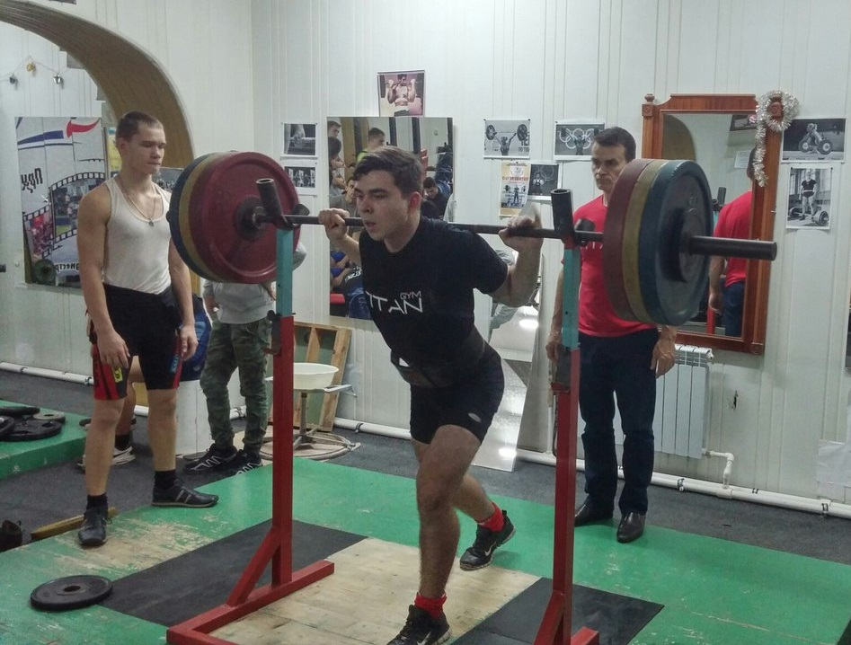

Давид Абрамович
Биография

Родился 21 октября 2002 года. Большую часть своего дедства провел в Одессе.
С школьных лет стал активно увлекаться спортом, на моем счету несколько
титулов чемпиона Молдовы. К слову спортом увлекаюсь по сдей день
После окончания школы в 2018 году поступил на Инженерный факультет Приднестровского
Государственного Университета, на специальность:"Электроснабжение".
В 2020 году прошёл бесплатное обучение "Разработчик сайтов на Tilda", моя первая работа.
Мне показалось слишком простым создание сайтов по блочным моделям, не укладывалось в голове
как за такое люди могут отдавать деньги, ведь тут достаточно просто сделать сайт, практически
каждый может обойтись без всякой помощи.
После этого решил попробовать поработать на фрилансе, самы быстрый и простой способ был
"Яндекс.Толока", к вечеру на моём Яндекс.Кошельке было что-то около 0,0025$. Я оставил эту затею
с фрилансом и пришел к выводу что деньги надо зарабатывать в реальном мире.
И вот спустя несколько лет снова пришёл к разработке сайтов но уже на языках HTML и CSS.